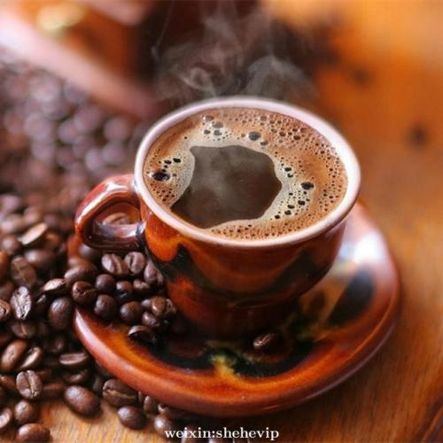
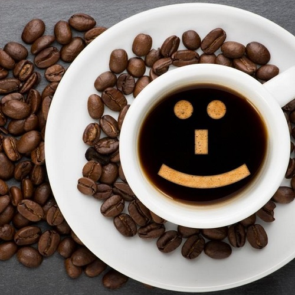
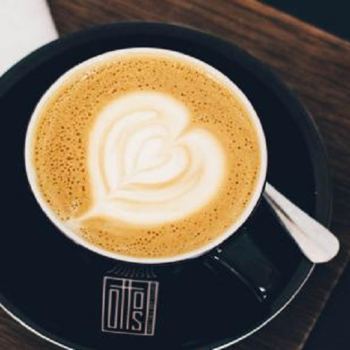
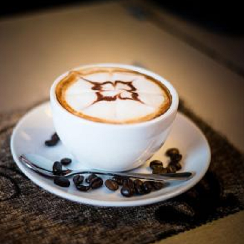

"咖啡"一词源自希腊语"Kaweh"，意思是"力量与热情"。
在世界各地，人们越来越爱喝咖啡。
随之而来的"咖啡文化"充满生活的每个时刻。
无论在家里、还是在办公室、或是各种社交场合，人们都在品着咖啡、它逐渐与时尚、现代生活联系在一起。
咖啡树是属茜草科常乔木，
日常饮用的咖啡是用咖啡豆配合各种不同的烹煮器具制作出来的，
而咖啡豆就是指咖啡树果实里面的果仁，用适当的方法烘焙而成，
一杯标准的咖啡品尝起来的味道不应该是苦涩的，
一名合格的咖啡师在制作咖啡时会严谨地进行每一步操作，
最后为客人呈上的咖啡在味觉上会呈现出不同程度的甜度、酸度、醇厚度或是干净度。
常见 | 咖啡树种
咖啡 • 挑选
-
咖啡豆的大小
咖啡豆的大小和颜色是最直观的考量要素，可以将适量的咖啡豆放在手掌上摊开， 一定要选择大小均匀、颜色一致，颗粒饱满的咖啡豆。质量上佳的咖啡豆还会富有均匀的光泽感，这是咖啡豆烘焙均匀的表现。
-
上好的咖啡豆放在手里闻一闻，都会有比较浓郁的咖啡香味和焦烤味，甚至混合着一定的土壤清香，不会有杂味。如果闻到了其他味道， 很有可能是由于咖啡豆受潮、存储时间过长造成的，千万不要选用有异味的咖啡豆。
-
购买咖啡豆的时候可以用手捏一捏，好的咖啡豆果实比较饱满，不好的咖啡豆则比较空。拿一颗咖啡豆，试着用手掰开看看， 如果咖啡豆足够新鲜的话，应该可以很轻易的掰开，还可以借此观察烘焙时火力是否均匀。如果烘焙均匀，咖啡豆的外层和里层的颜色就是一致的。
-

购买咖啡豆的时候可以用手捏一捏，好的咖啡豆果实比较饱满，不好的咖啡豆则比较空。拿一颗咖啡豆，试着用手掰开看看， 如果咖啡豆足够新鲜的话，应该可以很轻易的掰开，还可以借此观察烘焙时火力是否均匀。如果烘焙均匀，咖啡豆的外层和里层的颜色就是一致的。
-
购买咖啡豆的时候可以用手捏一捏，好的咖啡豆果实比较饱满，不好的咖啡豆则比较空。拿一颗咖啡豆，试着用手掰开看看， 如果咖啡豆足够新鲜的话，应该可以很轻易的掰开，还可以借此观察烘焙时火力是否均匀。如果烘焙均匀，咖啡豆的外层和里层的颜色就是一致的。